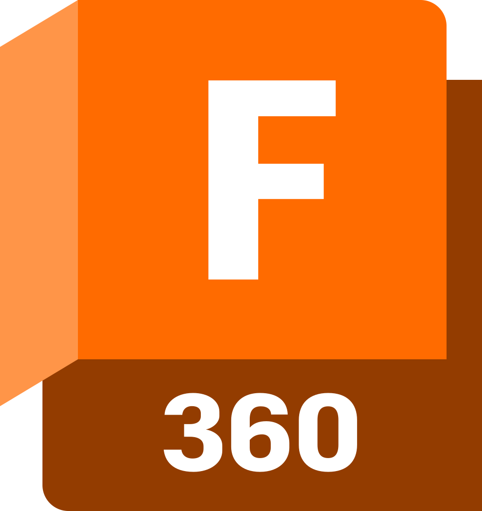

What Is CAD?
CAD stands for Computer Aided Design. CAD software allows you to design parts with a computer.
I use CAD in many of my projects. For example, the Quadcopter was designed using Onshape.

3D printer hotend designed in Fusion
CAD softwares
Autodesk Fusion (previously Fusion 360)
Autodesk Fusion allows for you to create parts and assemblies that can be manufactured.
Once parts are designed you can switch to the manufacturing workspace and use Computer Aided Manufacturing (CAM) to create toolpaths for parts to be machined.

2024 Robot Intake I designed in Fusion
One of the newer competitors in the CAD software space, Onshape is run completely through a broswer and all files must be stored in the cloud.
I have personally found that Onshape has much fewer bugs than Fusion. I have also found the performance is much better especially for large assemblies. Fusion at times has drove me insane because of the lack of performance optimizations.

KiCAD is a PCB(Printed Circuit Board) design software. It is used to design modern electronic devices that are compact, efficient, and portable.
You also can create schematics with it to plan out electric circuits.

Schematic from Flip-Flop-Circuit project